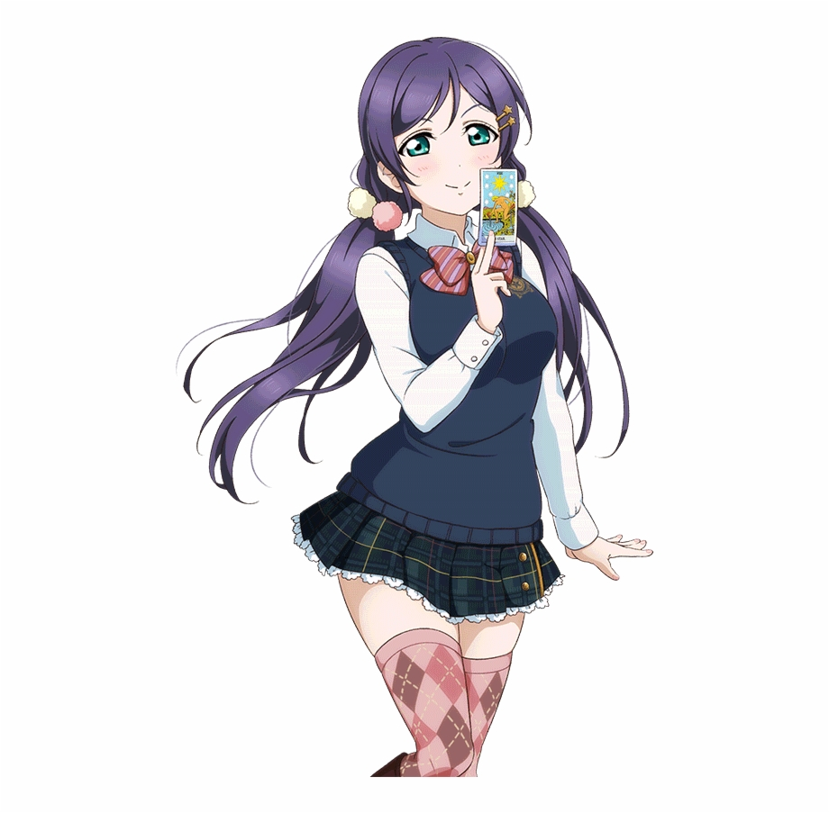

<ion-header>
  <ion-navbar>
    <ion-title>
      Nozomi
    </ion-title>
  </ion-navbar>
</ion-header>

<ion-content>
  <button (click)="ClickCount()" class="remImg">
    
    <div class="countImg">{{this.Click}}</div>
    <svg class="heart-loader" xmlns:rdf="http://www.w3.org/1999/02/22-rdf-syntax-ns#" xmlns:svg="http://www.w3.org/2000/svg" xmlns="http://www.w3.org/2000/svg" xmlns:xlink="http://www.w3.org/1999/xlink" viewBox="0 0 90 90" version="1.1">
      <g class="heart-loader__group">
        <path class="heart-loader__square" stroke-width="1" fill="none" d="M0,30 0,90 60,90 60,30z"/>
        <path class="heart-loader__circle m--left" stroke-width="1" fill="none" d="M60,60 a30,30 0 0,1 -60,0 a30,30 0 0,1 60,0"/>
        <path class="heart-loader__circle m--right" stroke-width="1" fill="none" d="M60,60 a30,30 0 0,1 -60,0 a30,30 0 0,1 60,0"/>
        <path class="heart-loader__heartPath" stroke-width="2" d="M60,30 a30,30 0 0,1 0,60 L0,90 0,30 a30,30 0 0,1 60,0" />
      </g>
    </svg>
  </button>
  
</ion-content>
